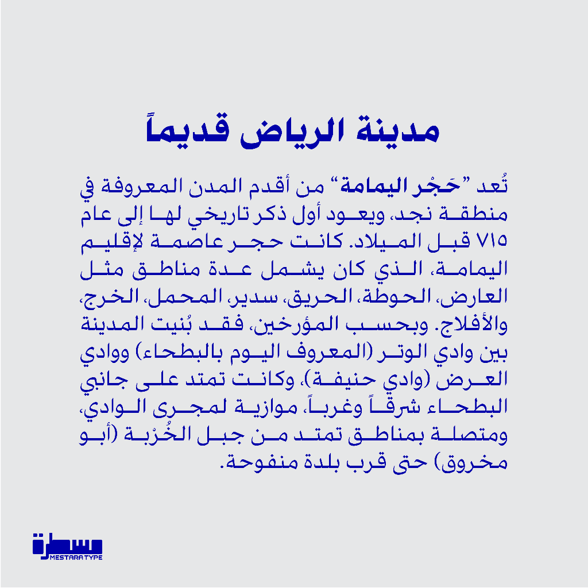
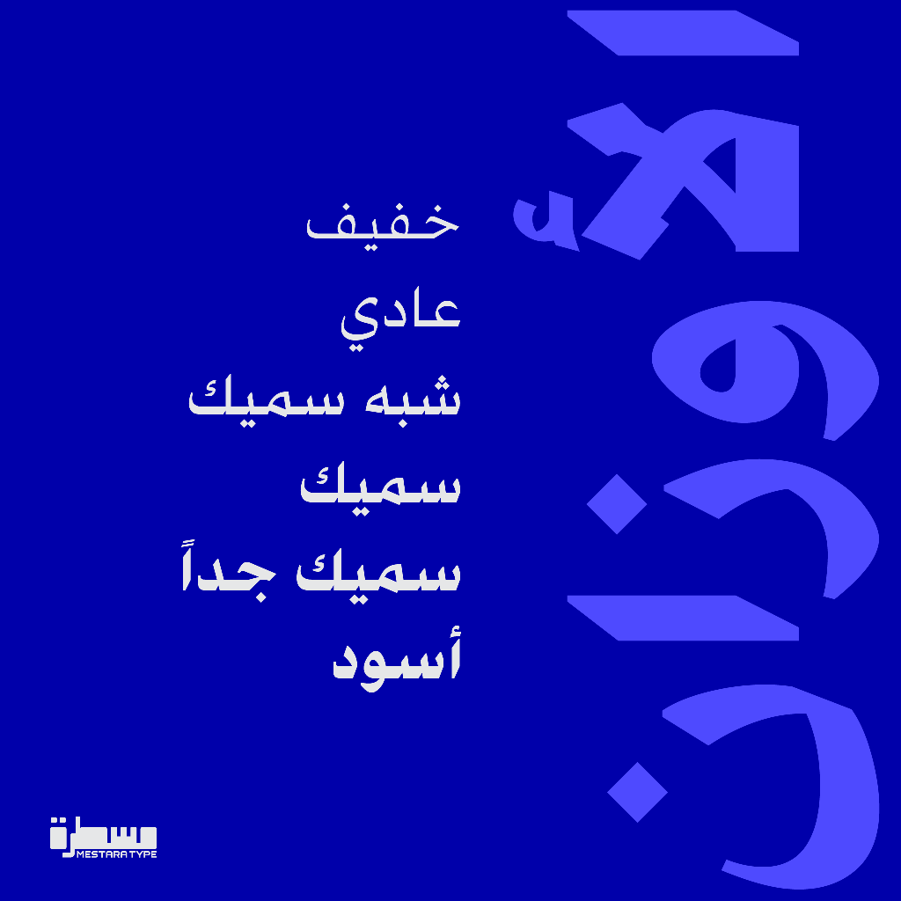
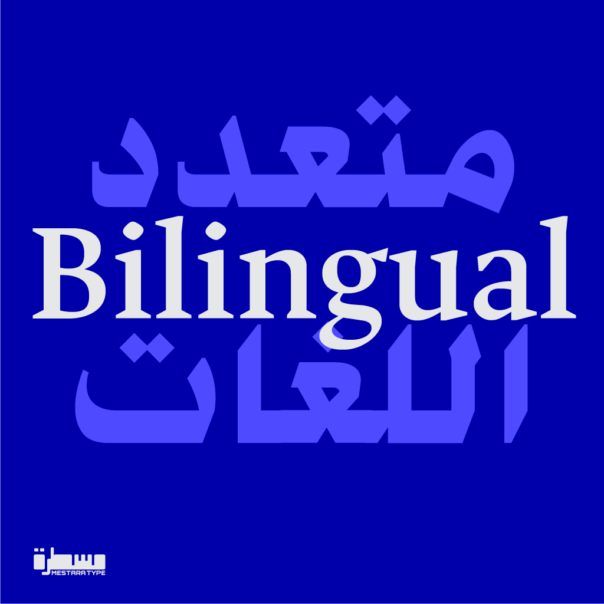
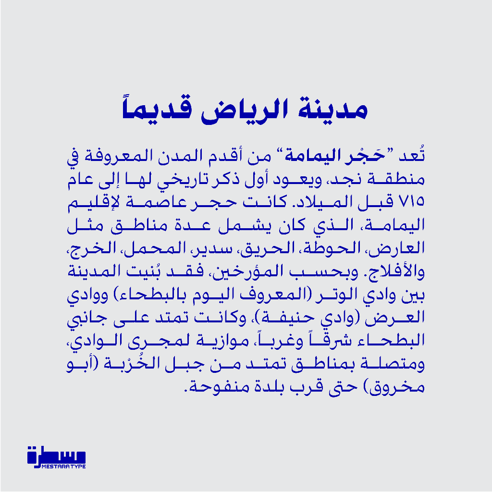
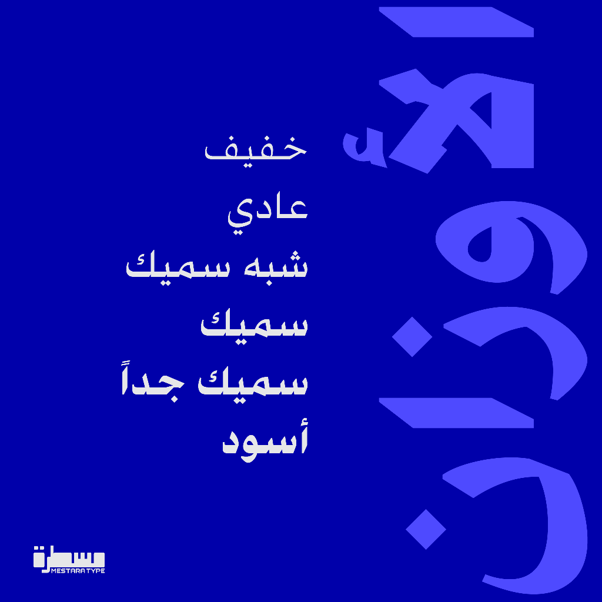
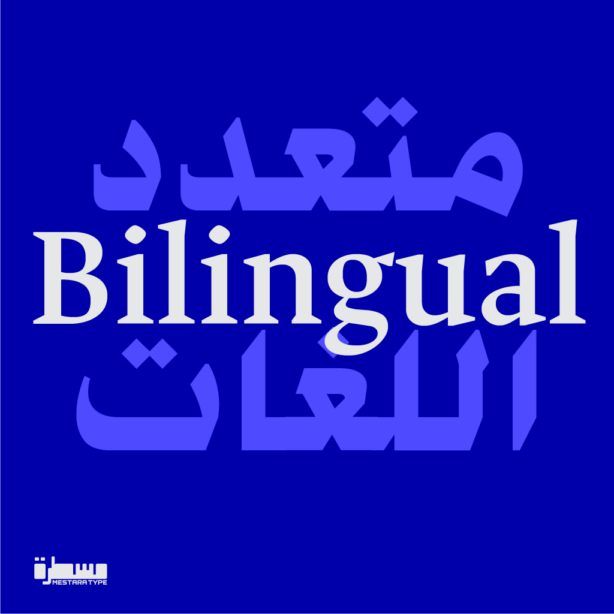

Alyamama, is a variable Arabic typeface with a classic Naskh design with sharp, simple strokes that provide clarity and refined contrast, making it suitable for advertising, signage, and for both headlines and body text.
The Latin glyphs are based on the open-source typeface UNAL Ancízar.
Alyamama project is led by Mestara Type a type foundry specialized in creating and designing Arabic typefaces. Founded by a professional calligrapher and designer, Mestara aims to reflect the beauty, and modernity while respecting traditional calligraphic principles.
To contribute, see github.com/MestaraType/AlYamama.
 




